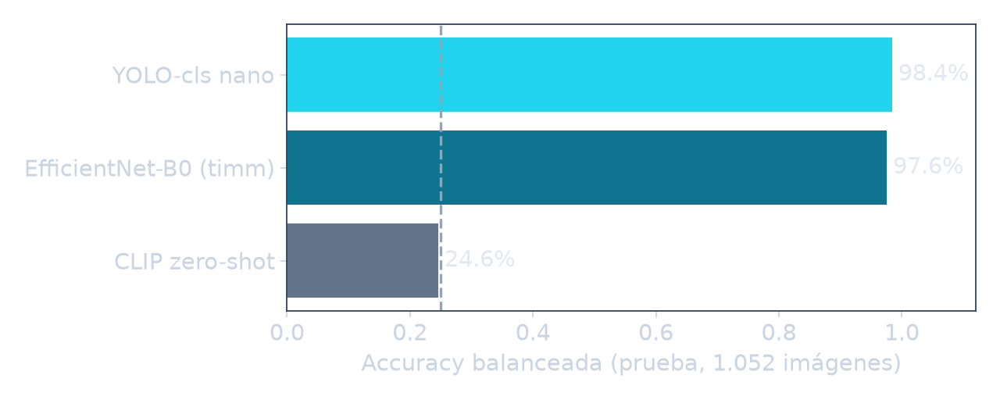
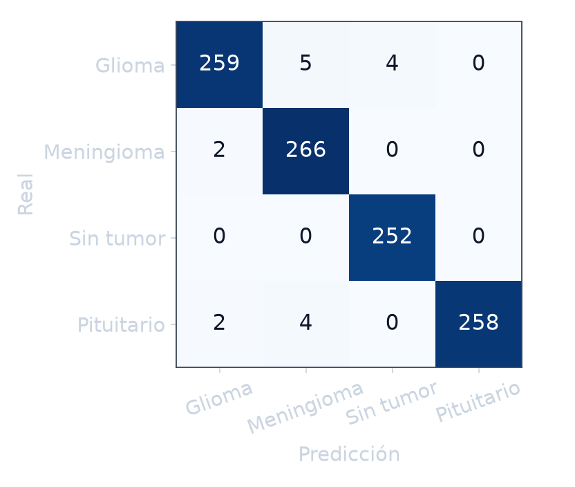
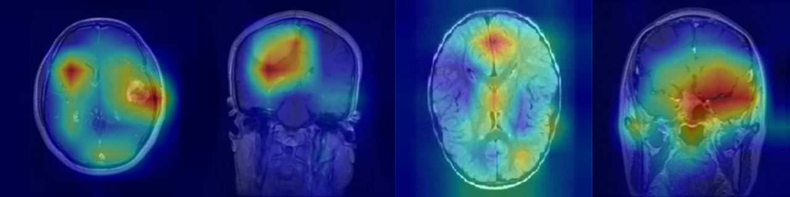
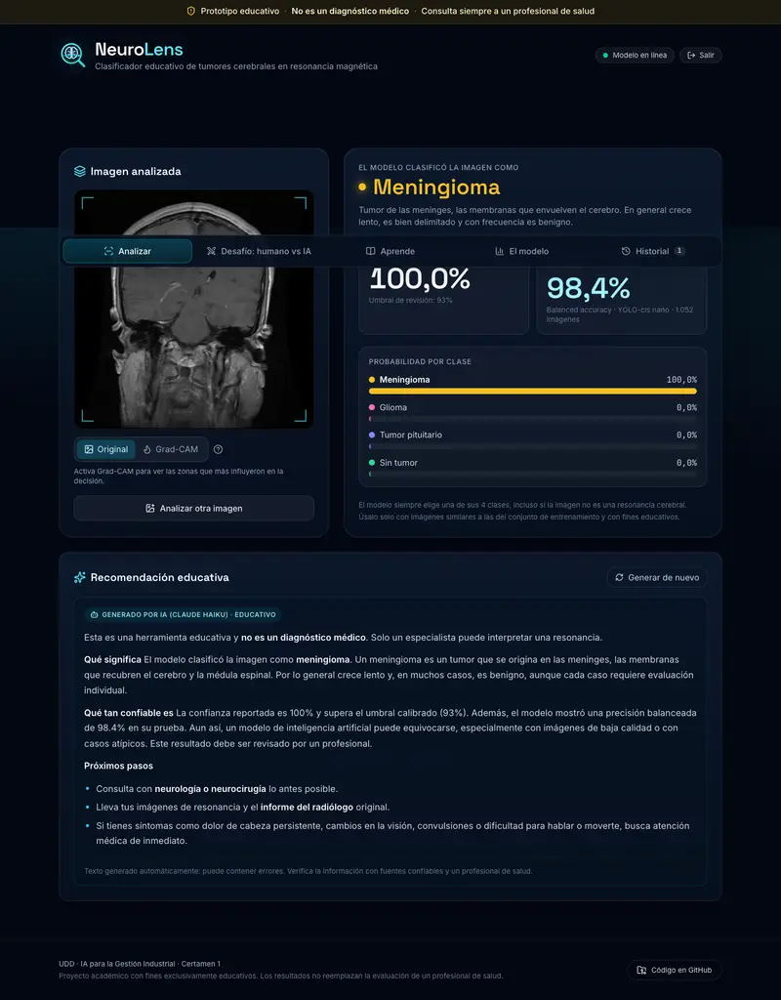

IA para la Gestión Industrial · Certamen 1
Clasificador educativo de tumores cerebrales en resonancia magnética,
con modelo preentrenado, Grad-CAM e IA generativa.
Matías Ortega · Gaspar Lammel
neurolens.cvdi.cl · github.com/OrtegaMatias/neurolens
Problema y motivación
Prototipo educativo. No es un diagnóstico médico. La app lo dice siempre y pide revisión humana cuando el modelo duda.
Datos
| Clase | Total | Train | Val | Test |
|---|---|---|---|---|
| Glioma | 1.786 | 1.250 | 268 | 268 |
| Meningioma | 1.784 | 1.249 | 267 | 268 |
| Sin tumor | 1.681 | 1.177 | 252 | 252 |
| Pituitario | 1.762 | 1.233 | 265 | 264 |
| Total | 7.013 | 4.909 | 1.052 | 1.052 |
Modelo · comparación

| Modelo | FN* | MB | ms CPU |
|---|---|---|---|
| CLIP zero-shot | — | 605 | 45 |
| EfficientNet-B0 | 5 | 16,3 | 240 |
| YOLO-cls nano ✓ | 4 | 3,2 | 6 |
* FN = tumor clasificado como "sin tumor", de 800 imágenes con tumor.
Modelo · métricas en prueba
Accuracy balanceada
Sensibilidad "hay tumor"
Especificidad (0 falsos positivos)
Umbral de confianza calibrado en validación

Interpretación
de 800 tumores
clasificados como "sin tumor" (0,5 %)
Explicabilidad

GliomaMeningiomaSin tumorPituitario
Demo · neurolens.cvdi.cl

Código e IA generativa
Next.js 16TailwindFramer Motion
↓ /api/* (red interna Docker)
FastAPIYOLO-clsGrad-CAM
↓ solo texto
Claude Haiku 5.5
docker compose aislado · Cloudflare Tunnel · landing con clave rotativa diaria (solo por SSH) · cookie HttpOnly firmada · límite de intentos.
Cierre
Aprendizajes
Riesgos
Mejoras
app.py y el frontend a partir de las pautas del curso; el grupo lo revisó, adaptó y puede explicarlo. Claude Haiku 5.5 es el LLM dentro de la app. Detalle en el README.
Gracias · neurolens.cvdi.cl